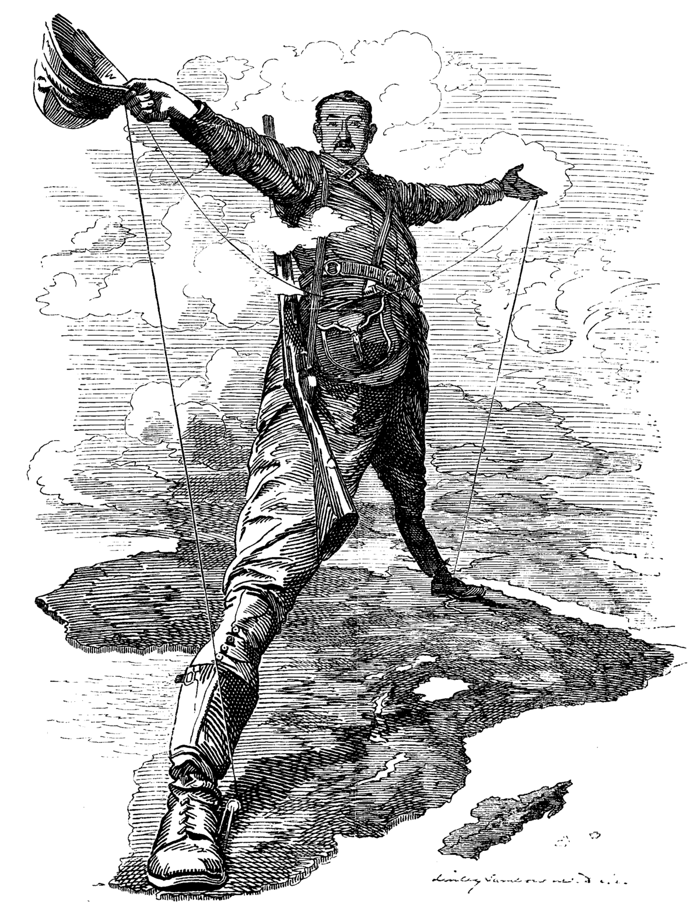

Das heutige Somalia gehörte ca. vom 2. bis zum 7. Jahrhundert zum äthiopischen Grossreich an. Zu dieser Zeit entstand der Islam. Die Religion wurde schliesslich auch zu Beginn des 9. Jahrhunderts nach Somalia gebracht...
Amtssprache: Somali, Arabisch
Hauptstadt: Mogadischu
Fläche: 637.657 km²
Einwohnerzahl: 15,4 Millionen
Währung: Somalia-Schilling (SOS)
...